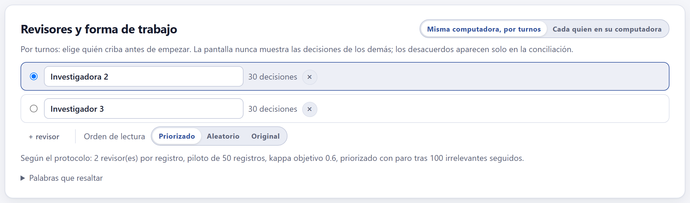
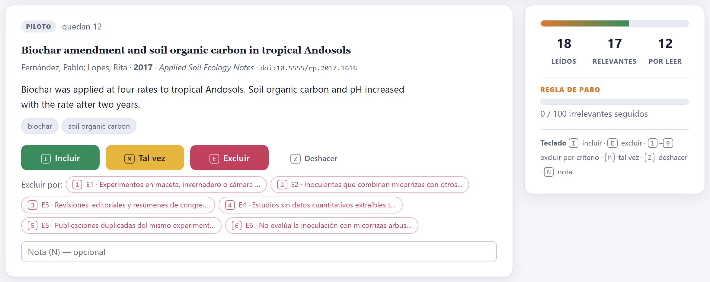
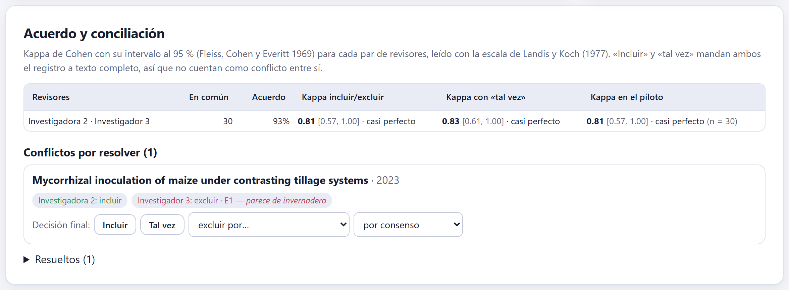
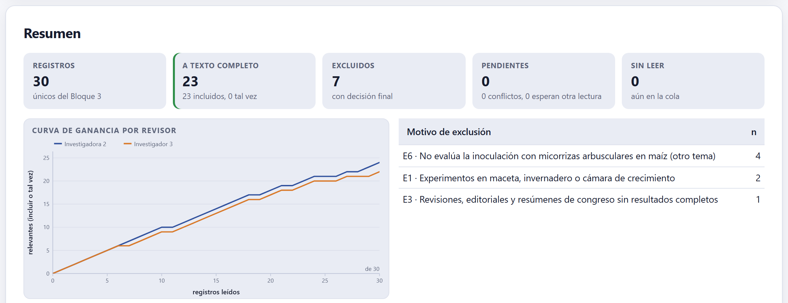

Cada registro se decide con una tecla. El orden aprende de tus decisiones para que los relevantes lleguen primero; la regla de paro y su verificación quedan documentadas; con dos revisores, cada quien lee a ciegas, se mide el acuerdo con kappa y los desacuerdos se concilian al final. Lo que pasa a texto completo es todo lo que alguien marcó como «incluir» o «tal vez».

Los revisores se crean solos a partir de los autores con el rol «Cribado» del protocolo; + revisor agrega otro y la ✕ lo quita con todas sus decisiones. El círculo marca al revisor activo: el que está cribando ahora.
| Misma computadora, por turnos | Cada quien elige su nombre antes de empezar. La pantalla nunca muestra las decisiones de los demás; los desacuerdos aparecen solo en la conciliación. |
| Cada quien en su computadora | Todos importan los mismos archivos en el Bloque 3 (o abren el mismo proyecto), cada revisor criba en la suya y exporta sus decisiones; una persona las importa todas para conciliar (sección 4.4). |
| Orden de lectura | Priorizado (el modelo sube lo que se parece a lo incluido), Aleatorio o Original (el de la importación). |
| Palabras que resaltar | Los términos de la estrategia de búsqueda se resaltan solos en el título, el resumen y las palabras clave. Aquí se añaden dos listas, separadas por comas: incluir (por ejemplo, field) y excluir (greenhouse, pot), que se marcan con otro color. Aceleran la lectura sin decidir nada. |

Cada registro muestra su título, autores, año, revista, DOI, resumen y palabras clave. Se decide con los botones o con el teclado:
| Tecla | Qué hace |
|---|---|
| I | Incluir: pasa a texto completo. |
| M o ? | Tal vez: también pasa a texto completo; úsalo cuando el resumen no alcanza para decidir. |
| E | Excluir sin motivo. |
| 1 a 9 | Excluir por el criterio de exclusión de ese número (E1, E2…), que queda registrado como motivo. |
| Z o ⌫ | Deshacer la última decisión. |
| N | Escribir una nota para este registro. |
La etiqueta de arriba dice en qué fase estás: piloto mientras no se complete el número de registros del piloto del protocolo, en el que conviene medir el acuerdo antes de seguir. Un registro sin resumen lo advierte: «Sin resumen: decide por el título o márcalo "tal vez"».
| Si el registro cumple claramente la pregunta | entonces incluir. |
| Si el resumen no deja saber si cumple (no dice el diseño, el sitio o la variable) | entonces tal vez: el texto completo lo aclarará. En el título y resumen, ante la duda, no se excluye. |
| Si falla claramente un criterio | entonces excluir con la tecla de ese criterio. |
| Si ningún criterio de exclusión describe por qué sobra | entonces tu protocolo necesita un criterio más: agrégalo como enmienda (el ejemplo agregó E6, «otro tema»). |
Con el orden priorizado, el modelo del laboratorio de la portada (sección 1.4) aprende de cada decisión y reordena lo que falta. El panel lateral cuenta los leídos, los relevantes (incluir o tal vez) y los que quedan por leer, y lleva la regla de paro declarada en el protocolo: la barra avanza con los irrelevantes seguidos («0 / 100 irrelevantes seguidos») o muestra la pendiente de la rodilla ρ.
Cuando la regla se cumple, la app no para sola. Dice «La regla se cumplió. Antes de parar, verifica con una muestra al azar de los no leídos: si aparece un relevante, se sigue cribando» y propone un tamaño de muestra (el 10 % de lo no leído, entre 50 y 300). Al elegir el tamaño, explica qué garantiza:
Si en una muestra al azar de n no leídos no aparece ningún relevante, la proporción de relevantes que queda entre los no leídos está, con 95 % de confianza, por debajo del límite superior exacto de Clopper–Pearson para 0 de n. La app lo traduce a registros: «Si no aparece ningún relevante en n registros, a 95 % de confianza quedarán como máximo k relevantes entre los N no leídos.» Una muestra más grande estrecha el límite. Si en la verificación aparece un relevante, se reanuda el cribado.
Al terminar la verificación sin relevantes, la app dice «La muestra no encontró relevantes: el cribado queda detenido y documentado»; los registros no leídos se cuentan como tales en el diagrama PRISMA del Bloque 5, con la regla y la verificación que los respaldan. Reanudar el cribado deshace el paro si decides seguir.
El ejemplo tiene solo 30 registros, y 23 de ellos son relevantes: con una prevalencia tan alta la priorización no ahorra nada y la regla de paro nunca se cumple. Es lo normal en una búsqueda pequeña y muy precisa. La priorización paga en búsquedas de miles de registros con 1 a 5 % de relevantes, como las del laboratorio de la portada.
En el modo Cada quien en su computadora, el desplegable Intercambiar decisiones tiene dos botones. ⤓ Exportar mis decisiones guarda las del revisor activo en un archivo pequeño; quien concilia las recibe y usa Importar decisiones de otro revisor…. Si el revisor no existía, se crea con su nombre. También se puede importar el archivo de proyecto completo de otro revisor: la app toma de él solo sus decisiones.
Las decisiones se ligan a cada registro por su DOI o, sin DOI, por su título y año. Para que las decisiones de dos computadoras coincidan, ambos revisores deben haber importado los mismos archivos en el Bloque 3 —lo más seguro es que uno importe, guarde el proyecto y el otro abra esa copia—.

Para cada par de revisores, la tabla da cuántos registros leyeron en común, el porcentaje de acuerdo y tres kappas de Cohen con su intervalo al 95 % (Fleiss, Cohen y Everitt 1969): el de incluir contra excluir, el de las tres categorías con «tal vez» y el del piloto. Cada kappa se lee con la escala de Landis y Koch (1977). Con tres o más revisores, se añade el kappa de Fleiss de todos.
| Kappa | Acuerdo | Qué hacer |
|---|---|---|
| ≤ 0 | pobre | Detente: discutan los desacuerdos del piloto, afinen la redacción de los criterios y repitan el piloto. |
| 0.01–0.20 | leve | |
| 0.21–0.40 | aceptable | |
| 0.41–0.60 | moderado | Revisa los criterios que más dividen antes de seguir. |
| 0.61–0.80 | sustancial | Sigue; concilia los desacuerdos al final. |
| 0.81–1.00 | casi perfecto |
Si el kappa del piloto queda debajo del objetivo del protocolo, la app lo avisa: «El kappa del piloto está bajo el objetivo del protocolo. Discutan los desacuerdos del piloto y afinen los criterios antes de seguir.» Como «incluir» y «tal vez» mandan ambos el registro a texto completo, no cuentan como conflicto entre sí.
Cada conflicto por resolver muestra lo que decidió cada revisor, con su motivo y su nota. La decisión final se toma con Incluir, Tal vez o excluir por… un criterio, y se anota quién la tomó: por consenso o por uno de los revisores (el tercero, si el protocolo lo prevé). Los resueltos quedan en Resueltos, donde se pueden reabrir.
Los revisores discreparon en 2 de 30 registros (93 % de acuerdo, kappa = 0.81, casi perfecto). En un estudio de labranza, uno lo incluyó y el otro lo excluyó por E1 porque «parece de invernadero»; al releer el resumen, era de campo: se incluyó por consenso. En un estudio de diversidad microbiana, uno lo marcó «tal vez» y el otro lo excluyó por E6: se excluyó por E6.

Las cinco cifras de arriba cuentan los registros, los que pasan a texto completo, los excluidos con decisión final, los pendientes (conflictos y registros que esperan la lectura de otro revisor) y los sin leer. La curva de ganancia por revisor muestra cuántos relevantes encontró cada quien según avanzaba; la tabla, los motivos de exclusión, que el Bloque 5 llevará al diagrama PRISMA.
Mis decisiones lista las del revisor activo, filtrables por incluidas, tal vez y excluidas, y cada una se puede cambiar desde su menú. Dos descargas: ⤓ Registros a texto completo (.ris), para buscarlos y guardarlos en tu gestor de referencias, y ⤓ Todas las decisiones (.csv), con la decisión, el motivo y la nota de cada revisor y la final: el registro de auditoría que un revisor puede pedir.
«No hay registros. Impórtalos y deduplícalos en el Bloque 3»; «Sin criterios de exclusión en el protocolo (Bloque 2): las exclusiones no llevarán motivo»; «Con un solo revisor no hay acuerdo que medir»; el kappa del piloto bajo el objetivo; la regla de paro cumplida; y «¡Terminaste! Leíste todos los registros».